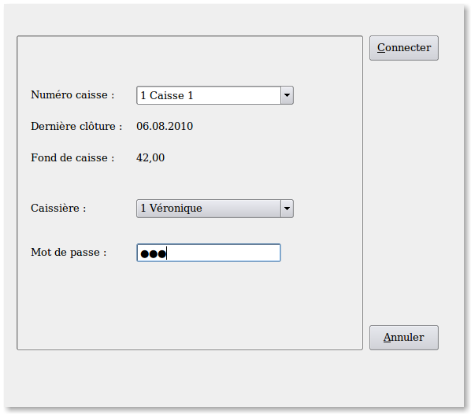

~ Laurux.Pos ~

~ Laurux.Pos ~ |
|
|
|
Connexion de la caisse.

Cette opération va permettre de connecter la caisse du poste sur lequel on se trouve.
Pour pouvoir aller en saisie de caisse, cette
opération est obligatoire car elle permet à la caisse de communiquer
avec le serveur pour y récuperer les données nécéssaires à son
fonctionnement.
On sélectionne le numéro de caisse. La
combobox ne proposera que le numéro de caisse qui est déclaré sur le
poste ou va s'effectuer la connexion.
La caisse étant sélectionnée, la date de dernière
clôture s'affichera ainsi que le montant du fond de caisse.
On va ensuite saisir le code de la caissière et son mot de passe.
NB . Il n'est pas possible de saisir un code
caissière qui est déjà utilisé sur une autre caisse.
Après validation du mot de passe, le curseur ira se positionner sur le bouton "Connecter". Une pression sur la touche enter ou un clic sur ce bouton va connecter la caisse. Ensuite, on pourra aller en saisie du fond de caisse ou directement en saisie de caisse si le fond de caisse est bon.
----------------------------------------------------------------------------------------------------------------------